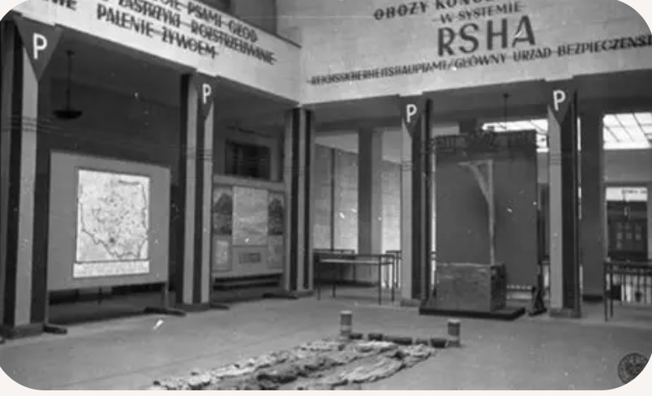

La police politique désigne l’ensemble des services chargés de surveiller, contrôler et réprimer la population au profit du régime nazi. Elle traque les opposants, les résistants, les Juifs, les communistes et toutes les personnes considérées comme « ennemies du Reich ».
Son objectif principal est de maintenir la dictature par la peur, la violence et l’arbitraire.
La police politique du Troisième Reich repose sur plusieurs structures :
Ces organismes travaillent ensemble pour assurer un contrôle total de la société.
La police politique s’appuie sur un vaste réseau d’informateurs, de dénonciations et de fiches individuelles. Les courriers, les conversations, les réunions et les déplacements peuvent être surveillés.
La délation devient un outil central : voisins, collègues ou même membres de la famille peuvent signaler des comportements jugés « suspects ».
Les services de police politique disposent du pouvoir d’arrêter sans mandat, de détenir sans procès et de pratiquer des interrogatoires violents. La « détention de protection » permet d’enfermer quelqu’un indéfiniment, sans contrôle judiciaire.
Les prisons et les locaux de la Gestapo deviennent des lieux de peur et de torture.
La police politique joue un rôle clé dans l’alimentation des camps de concentration et, plus tard, des centres d’extermination. Les personnes arrêtées peuvent être déportées vers ces lieux sans jugement.
Les décisions de transfert sont souvent prises de manière administrative, sans possibilité de recours.
Les communistes, socialistes, syndicalistes, religieux opposés au régime, intellectuels critiques et résistants sont particulièrement ciblés. La police politique cherche à briser toute forme d’organisation ou de contestation.
Les réseaux de résistance sont infiltrés, démantelés et leurs membres arrêtés, torturés ou exécutés.
La police politique participe à la persécution et à l’extermination des Juifs d’Europe. Elle organise les rafles, coordonne les arrestations et prépare les déportations vers les ghettos et les camps.
Les services du RSHA, notamment ceux dirigés par Adolf Eichmann, jouent un rôle central dans la logistique de la « Solution finale ».
La police politique incarne la terreur d’État : elle agit au-dessus des lois, sans contrôle, et impose un climat de peur permanent. La population sait qu’une parole, un geste ou une opinion peuvent suffire à provoquer une arrestation.
Cette peur généralisée permet au régime nazi de se maintenir et de mener sa politique sans opposition organisée.
Après la chute du régime nazi, les structures de police politique sont dissoutes. Les principaux responsables sont jugés lors des procès de Nuremberg et d’autres tribunaux.
La mémoire de la police politique reste un avertissement sur les dangers des régimes autoritaires et de la suppression des libertés fondamentales.